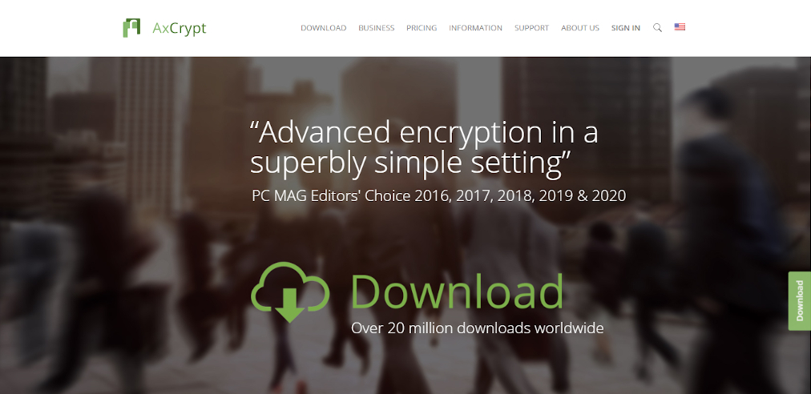
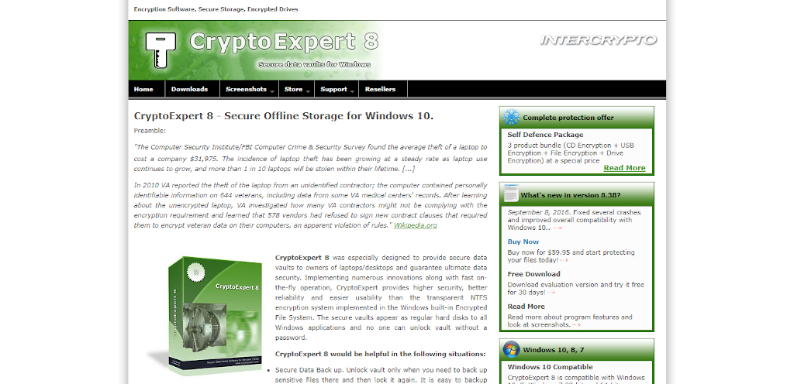
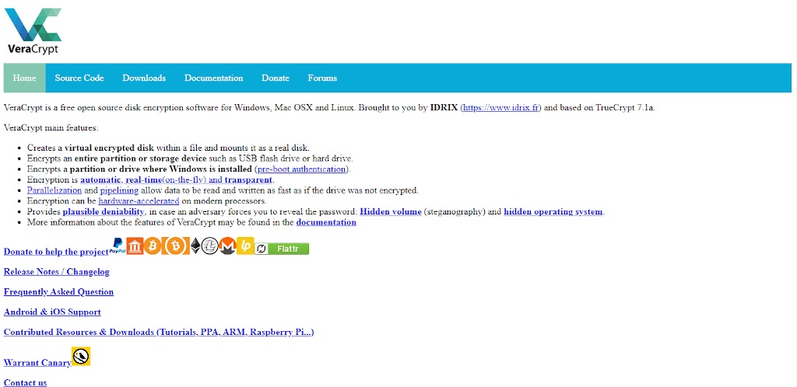

El cifrado es el método por el cual la información es convertida en un código secreto que esconde el verdadero significado de la información. El propósito principal del cifrado es proteger la confidencialidad de los datos almacenados en sistemas computacionales o transmitidos por Internet o cualquier otra red de datos.
Para realizar este proceso se utiliza un algoritmo de cifrado, el cual es una fórmula matemática que sirve para transformar datos a una forma que parece aleatoria. Un algoritmo usará una llave (una cadena de caracteres) para alterar los datos de manera predecible, para que estos puedan convertirse en texto en claro de nuevo.
En Internet se encuentran disponibles una gran cantidad de alternativas de software de cifrado, que implementan los conceptos explicados anteriormente. Una vez configurados de forma adecuada, incluso si el software de seguridad de tu equipo falla, cualquier atacante se encontrará con una barrera casi imposible de penetrar. Les será muy díficil aprovecharse de tus datos cifrados.
A continuación se presentan algunas de estas herramientas:
AxCrypt
Aunque el software gratis puede ser conveniente para algunos, no siempre es tan poderoso como ofertas premium, y AxCrypt es una buena opción si quieres algo confiable. Este software ha sido diseñado específicamente para individuos y equipos pequeños dentro de empresas.
Provee una seguridad fuerte, con archivos protegidos por cifrado AES de 128 o 256 bits, que debería frustrar a cualquier intruso. También tiene capacidades de almacenamiento en la nube, ya que protegerá automáticamente los archivos guardados en servicios como Google Drive o Dropbox. Tiene un costo de 39.95 dólares.
CryptoExpert
CryptoExpert es una herramiento para Windows que ofrece bóvedas de datos seguras para toda tu información, asegurando que siempre esta protegida de fugas potenciales.
La mejor parte de CryptoExpert es que puede asegurar bóvedas de tamaño ilimitado, y utiliza los algoritmos de cifrado Blowfish, Cast, 3DES y AES-256. Funciona con versiones de 32 y 64 bits de Windows 7, 8 y 10. Tiene un costo de 59.95 dólares.
VeraCrypt
VeraCrypt es una de las herramientas de seguridad más populares, dándote acceso a cifrado de grado empresarial para datos importantes. Es software libre y por lo tanto su código fuente está disponible para todos, lo que significa que es completamente gratis.
El sistema es bastante fácil de usar, y todo lo que realmente hace es añadir contraseñas a tus datos y particiones. Otra ventaja de VeraCrypt es que es inmune a ataques de fuerza bruta, así que nunca tienes que preocuparte de que hackers descifren tus contraseñas y otra información sensible.